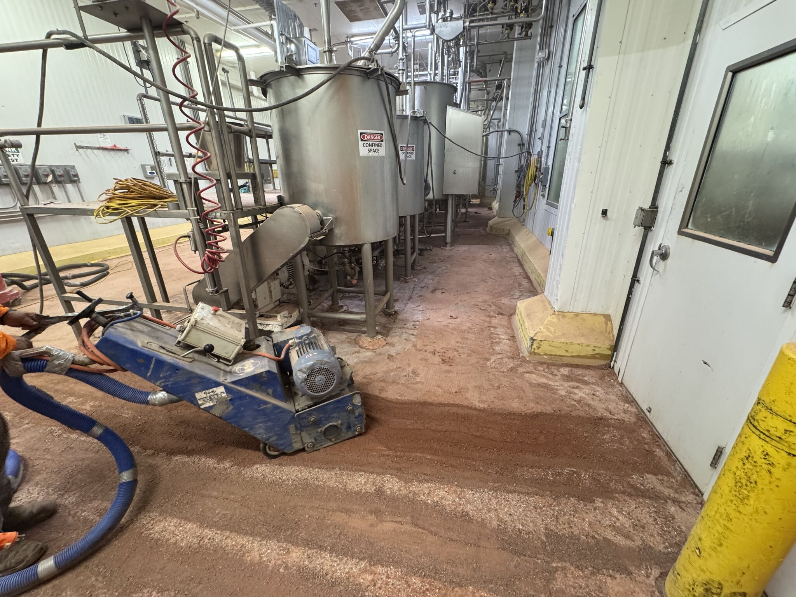
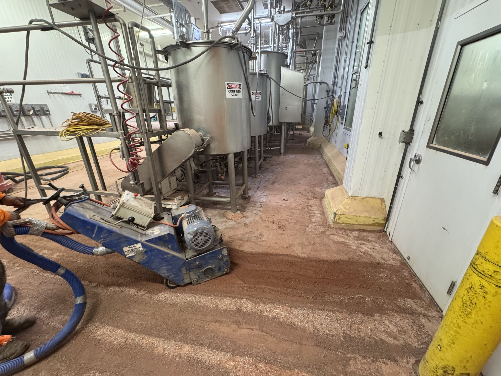
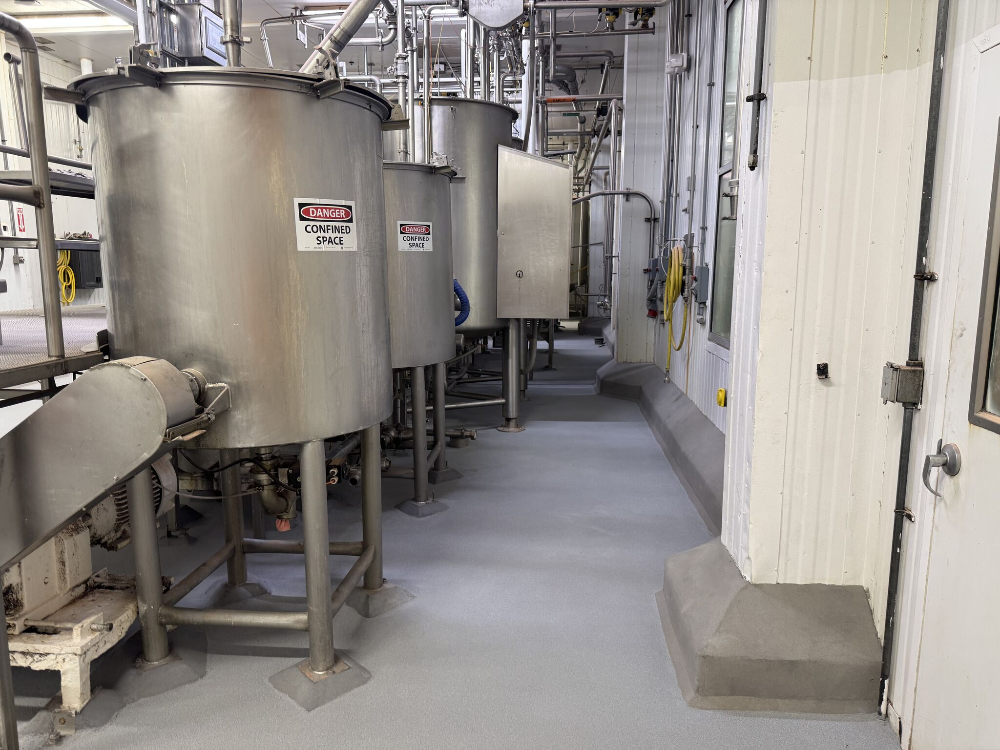
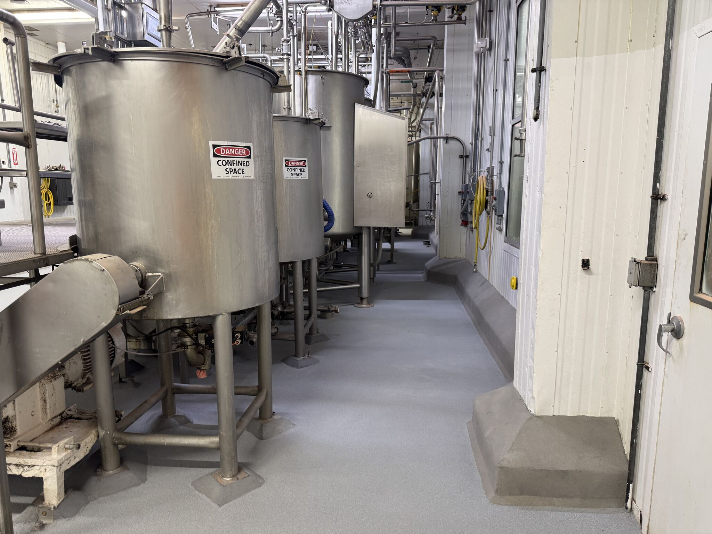

We've been busy. Really busy. And when you're this deep in projects, sometimes you go radio silent on social media. But the work speaks for itself — and this one is worth sharing.
Before: Delaminated and Failing
The existing resinous floor was in bad shape — delaminated, cracked, and peeling up in chunks. The old yellow curbing was failing. Standing water was pooling under equipment. This wasn't a patch job; it was a complete renovation.
Demo & Surface Prep
 

Our crew jackhammered the existing resinous flooring system down to bare concrete, then scarified the substrate to eliminate contaminants and establish a proper adhesion profile. Every inch had to be prepped — including the tight spaces under and around existing processing equipment.
Installation: STX Floor & VR Curbing
With the substrate prepped, our team installed SaniCrete STX — 3/8" stainless steel reinforced cementitious urethane — across the entire floor. Every wall-to-floor transition got SaniCrete VR 2" cant cove curbing for a seamless, sanitary transition that eliminates the harborage points old square curbing leaves behind.
After: Clean, Seamless, Built to Last
 

The transformation is dramatic. From a delaminated, failing floor to a bright, seamless, USDA-compliant surface that runs under, around, and through every piece of equipment in the facility. The VR curbing creates clean, coved transitions at every wall. Zero harborage points, zero standing water, zero compromises.
Products Used
- SaniCrete STX — 3/8" stainless steel reinforced cementitious urethane
- SaniCrete VR — 2" cant cove vertical curbing system